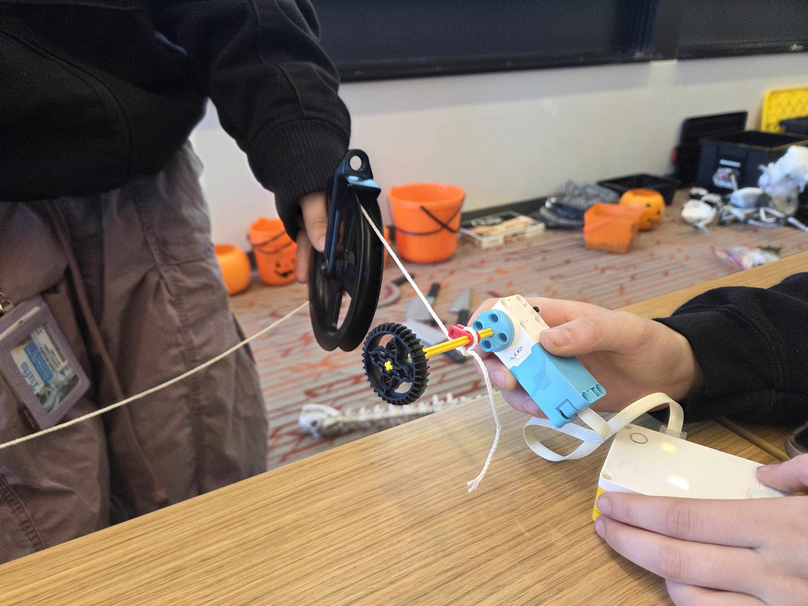
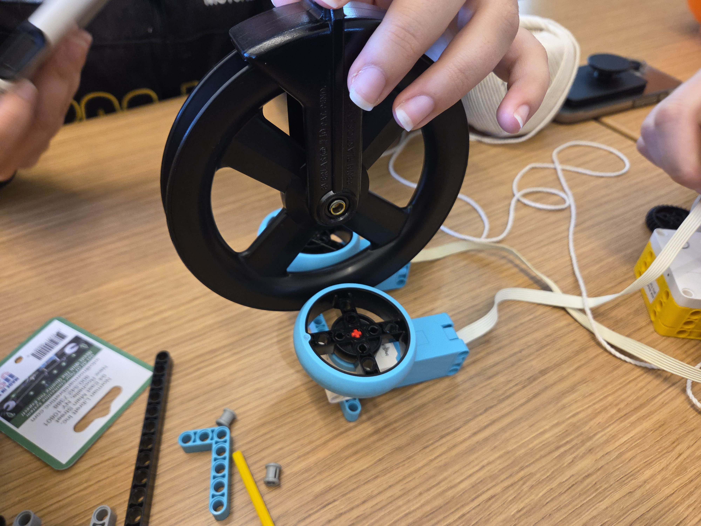
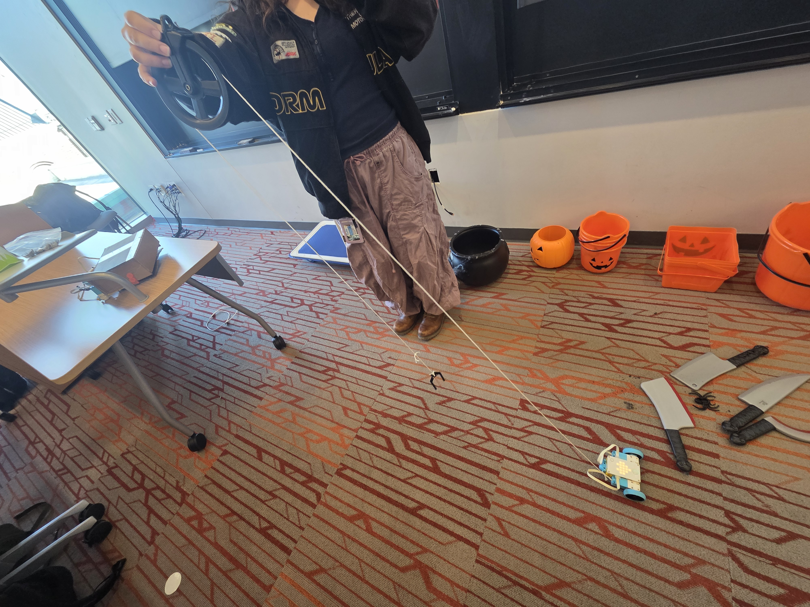

In class, we brainstormed ways to create an efficient pulley system with the Spike Prime. Our ideas included using the wheels to drive the pulley itself, using a long axle to wind the string on, increasing the radius of the axle to raise the object faster, and having a car drive away to raise and lower the object.

